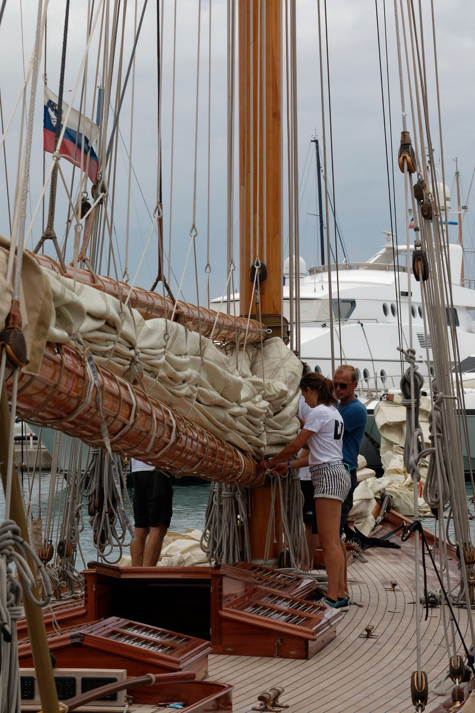
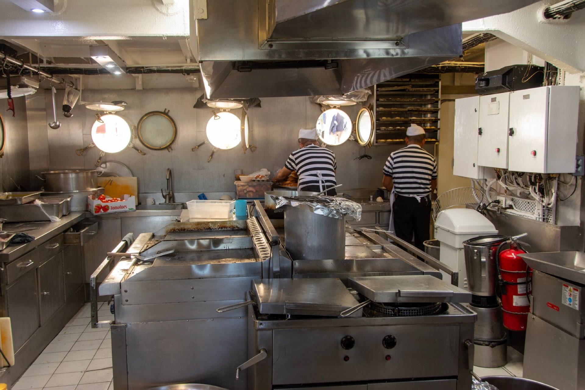
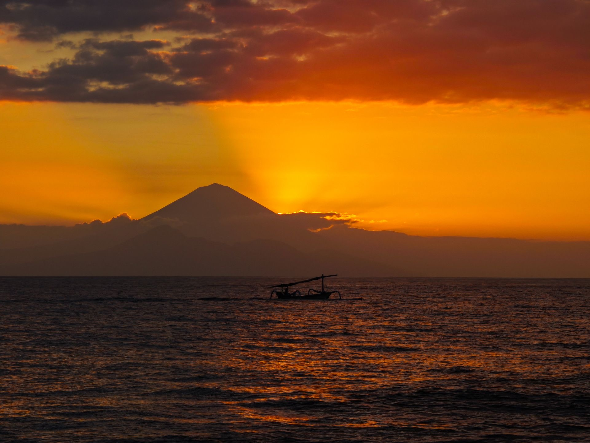

The Waow Experience
Seven to twelve nights. One journey built around diving.


From four dives a day to long lunches, local flavours, time on deck and excursions ashore,
life on WAOW 2 revolves around the sea and everything that comes with it.
Our cruises range from 7 to 12 nights, with at least one land excursion depending on the
itinerary, taking you closer to some of Indonesia's most remote gems.
Diving.
Four dives a day. Everything else taken care of.
Diving is at the heart of every WAOW journey.
Four dives a day take you into Indonesia's extraordinary underwater world,
with small groups of no more than four divers per guide.
From the first descent to the last surface interval, the crew takes care of the
details: preparing, rinsing and storing your gear, keeping your equipment
ready and making sure you can simply focus on the next dive.
Back on board, there's always something warm waiting for you.
dive deeper
Life between the dives
Between dives, the pace slows down.
Meals are served, the deck becomes the place to linger, and there is always time for a paddle,
a massage, a shore excursion, or absolutely nothing at all.

The first sip of the drink
is after the last dip in the sea
Gastronomy.
Five moments around the table punctuate each day, a light
breakfast before the first dive, a generous one after, then
lunch, afternoon snacks and dinner.
Our kitchen blends Indonesian flavours with inspirations
from around the world, built on fresh, local ingredients. In
remote waters, local fishermen sometimes come alongside
with the day's catch, fresh from the sea, and sometimes on
your plate that evening.
Vegetarian, vegan and other diets get the same passion and
creativity as every menu, never an afterthought.
Special diets on request.
Hotel
Service.
Housekeeping is done every day, laundry is available on request,
and the crew quietly keeps everything running while you get on with your day.
Housekeeping
Every day, while you're out exploring.
Laundry
Available on request.
Drinks & Snacks
Soft drinks, water, tea, coffee and snacks throughout the day.
Massages
À la carte


The little things
are taken care of.

Beyond
Diving.
When you're not underwater
There is plenty to do above it.
Grab a paddle and explore the coastline. Join a shore
excursion and discover life beyond the reef. Go
snorkelling with the non-divers in your group. Or
simply find a quiet corner on deck and watch
Indonesia go by.

One evening ashore
Once during every cruise, we swap the deck for the beach.
As the sun goes down, join the crew for a beach aperitif, feet in the sand, drinks in hand and the last light of the day around you.
Drinks are on us.
Just one of those WAOW moments you don't plan for.
What's
Included.
Your stay includes:
- Airport or hotel transfers
- 3-4 dives per day
- Nitrox
- 5 meals per day
- Non-alcoholic drinks
- Snacks throughout the day
- Daily housekeeping
- Land excursions
- Snorkelling trips for non-diving guests

Not included
but available :
- Rental gear
- Alcohol beverages
- A la carte massage
- Private guide
- Dive courses
Make Waow Yours
Available for full charters.
Bring your family, your closest
friends or your dive crew and
make the journey your own.
Choose your dates, shape the
itinerary, set the pace. Spend
longer at a favourite dive site,
add a land adventure, change
the rhythm of the days or
simply follow the conditions.
Your boat.
Your people.
Your way.
Ready for the next dive?
Four dives a day is only the beginning.
Discover the destinations, dive sites and underwater worlds waiting along the way.